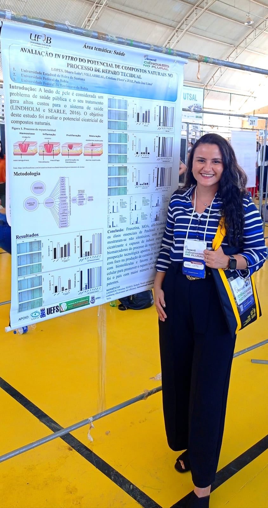
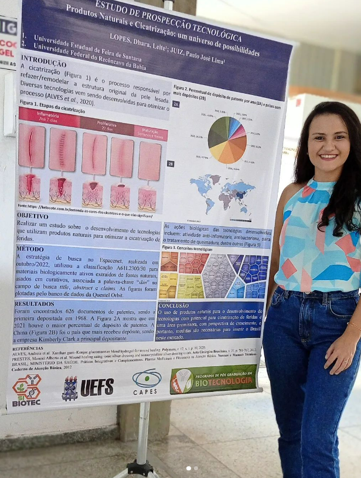
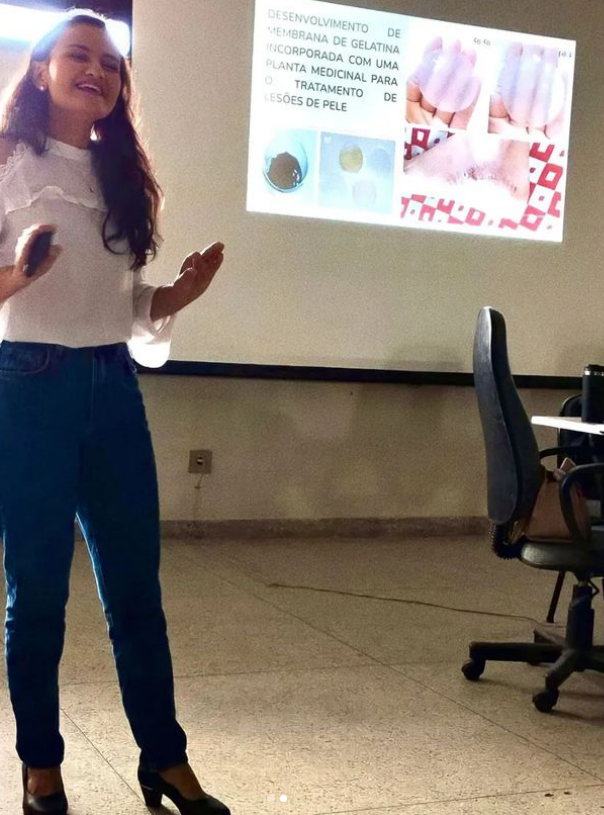

Uma apaixonada profissional da área da saúde, bacharel em biomedicina com habilitação em Patologia Clínica pelo Centro Universitário UNIFTC Feira de Santana (2020.2). Minha jornada acadêmica tem sido repleta de esforço e busca constante por conhecimento, e isso me levou a conquistar o título de mestra em Biotecnologia pela Universidade Estadual de Feira de Santana – UEFS (2023.1). Porém, não parei por aí. Meu fascínio e dedicação pela área da saúde e pela busca constante por aprendizagem se traduzem em um compromisso com a melhoria contínua. Assim, tornei-me especialista em Gestão de Processos e Qualidade (2023.2) e também em Saúde Pública (2023.2). Meu perfil acadêmico e profissional demonstra meu comprometimento com a excelência e a capacidade de fazer contribuições significativas para a área da saúde, da biomedicina e da biotecnologia, ao mesmo tempo em que promove a qualidade e o acesso à saúde em nível mais amplo. Convido você a navegar, aqui e agora, um pouco por minha trajetória!
Olá, eu sou
Dhara Leite Lopes
Mestra | Biomédica | Especialista em Saúde Pública e Gestão de Processos e Qualidade.
CRBM-12890

Formação acadêmica
UniFTC
Bacharelado - Biomedicina
Apresentações · Comunicação · Habilidades analíticas · Patologia clínica.
UNINTER Centro Universitário Internacional
Pós-graduação Lato Sensu - Especialização, Gestão de processos e Qualidade
Análise de dados · Planejamento estratégico · Gestão de pessoas · Gestão · Auditoria · Gestão da qualidade.
UNINTER Centro Universitário Internacional
Pós-graduação Lato Sensu - Especialização, Saúde Pública.
Análise de dados · Planejamento estratégico · Saúde da comunidade · Gestão de pessoas · Comunicação em saúde · Gestão de serviços de saúde · Epidemiologia · Vigilância epidemiológica
Universidade Estadual de Feira de Santana
Mestrado - Biotecnologia
Análise de dados · Apresentações · Boas práticas de laboratório · Pesquisa · Comunicação · Habilidades analíticas · Biologia molecular · Diagnósticos in vitro · In vitro · Gestão de projetos · Mineração de dados · ELISA · Tratamento de feridas.
Destaques
Defesa do mestrado
Dissertação intitulada "Avaliação in vitro do potencial de compostos naturais no processo de reparo tecidual"
Apresentação na VII Reunião de Ciência, Tecnologia, Inovação e Cultura do Recôncavo da Bahia
A variação genética e a diversidade dos fenótipos em pacientes com paquioníquia congênita
Apresentação na IX RECONCITEC da UFRB
Avaliação in vitro do potencial de compostos naturais no processo de reparo tecidual.
Apresentação no III Simpósio de Biotecnologia da UEFS
Estudo de prospecção tecnológica Produtos Naturais e Cicatrização: um universo de possibilidades.
Palestrante minicurso
Palestrante no minicurso "Conexões e aplicabilidades científicas das técnicas utilizadas no curso de Biotecnologia da UEFS"
Competências
- Diagnósticos in vitro
- Planejamento estratégico
- Gestão de pessoas
- Análise de dados
- Vigilância epidemiológica
- Epidemiologia
- Gestão de serviços de saúde
- Saúde da comunidade
- Comunicação em saúde
- Gestão
- Gestão da qualidade
- Auditoria
- Biologia molecular
- Mineração de dados
- In vitro
- ELISA
- Tratamento de feridas
- Boas práticas de laboratório
- Habilidades analíticas
- Patologia clínica
- Inglês básico
- Gestão de projetos
- Comunicação
- Apresentações
- Pesquisa